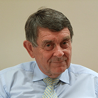
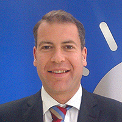

ABOUT US

Helen Auckland, Global Paths Director
Helen worked as International EMBA Coordinator at the University of Pittsburgh for 2 years followed by 6 years working in International Admissions at Duquesne University, Pittsburgh, USA. She currently works at the University of Bath, UK as a Placements and Internship Officer.
Having worked with and reviewed the university applications of hundreds of international students, Helen understands the needs of students when trying to decide what to do after high school. Her aim is to share her knowledge to help them make a non-biased, logical decision about what to do post-high school.
Throughout her career, Helen has been connected to the corporate and non-profit community and has learned that being successful is not solely based on good grades. The right attitude, communication skills and approach to life are essential!

Ofelia Ponce, Global Paths Programme Assistant
Ofelia spent 6 years studying on a full scholarship in the USA. Alongside her Bachelors degree in International Relations and Masters degree in Social & Public Policy, Ofelia worked as a Resident Assistant at Duquesne University, Pittsburgh. She currently works in the Ministry of Foreign Affairs in Honduras and is studying Law with the plan of returning to the US to continue her studies.
Ofelia travels to the UK each year to help run the Global Paths Summer Programme. Her experience of being an international student in the US and of managing students on a university campus brings leadership, care and understanding to the programme. Throughout the year, Ofelia delivers Global Paths workshops to students all over the world. Her knowledge of the US University system and application process brings insight and logic to the university application process.
GPS Advisors & Contributors

David Auckland, Professor Emeritus University of Manchester
David brings over 30 years of teaching and a wealth of business experience to Global Paths. He is the academic lead for the Global Business Immersion course. David is Professor Emeritus University of Manchester, Visiting Professor at the University of Salford Business School and Founder member of UKBI (national authority on business creation in the UK). He served as Graduate Dean in the Graduate School of Science, Engineering and Medicine at the University of Manchester.
David launched the first UK university based business incubator, creating over 30 successful companies per year. Using this experience, he developed the Master of Enterprise program and a series of complementary undergraduate programs which form the basis of the Manchester Enterprise Center, an essential part of Manchester University's Business School.
David runs his own company helping new and established companies develop successfully. Assisting over 150 companies to date, David also teaches the "Innovation Lab process" throughout the UK, via programs ranging from foundation degrees to post graduate certificates.

Bert Dorazio, Director, Organization Development, Nestle Purina Pet Care, North America
Bert delivers the 'Passion, Purpose, Values' presentation which lays the foundation for the rest of the course. Bert also offers ongoing advice for the rest of the course.
As Director of Organisation Development for Nestle Purina Pet Care, North America, Bert's primary areas of responsibility for the company include talent acquisition, development and retention, performance management programmes, succession planning, training, leadership development and continuous development programmes.
Bert brings his extensive knowledge of what some of the most important skills are in work (and life) to the Global Life Project. His enthusiasm, intelligence and energy leave students with a unique perspective on their future goals and a strong inspiration to achieve them!

Shubhie Panicker, Software Engineer, Google, California
As well as talking with students about her pathway from high school to working for Google, Shubhie helps behind the scenes of Global Paths as an advisor, bringing perspective and intelligence to the development of GP products.
Shubhie has over 8 years of industry experience in designing and developing software for large scale systems. At Google, she works on front end infrastructure for social products like Google+. She enjoys inspiring young people to pursue a career in technology.

Kelly Martin
With an Undergraduate degree in Psychology and a Masters in Education, Kelly brings academic perspective and guidance to Global Paths. Having lived and studied in Spain, she passionately believes in international experience. Kelly has worked as an International Admissions Assistant at Duquesne University and a Student Advisor at Carlow University in Pittsburgh. With extensive experience of teaching as well as leading numerous summer programmes and international trips, Kelly is a key contributor to the development of Global Paths.

Robbie Muirhead
Robbie is a member of the judging panel for the Global Enterprise Project. He is a highly experienced businessman and entrepreneur having launched many companies throughout the world. More details to follow!.
